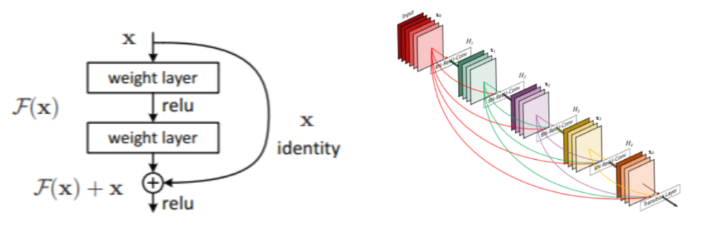
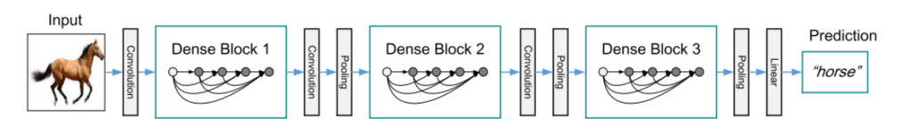
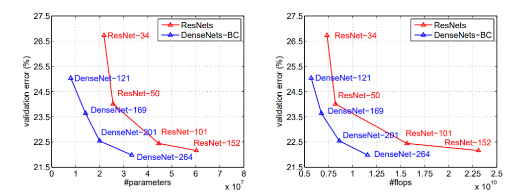

arxiv, github(official), keras(pretrained), pytorch(pretrained)
どんなもの？
ResNetsにインスパイアされた、新しいCNNアーキテクチャである DenseNet を提案しました。ResNetよりもパラメータ数が約7割になり、CIFAR10で1.5%の改善ができました。

先行研究と比べてどこがすごい？
2015年のResNetsの登場により、100層以上のネットワークが構成できるようになり、さらに精度が向上しました。ResNetsではアイディアskip connectionを採用し、入力をskipさせて、後の層の入力に足しこむ機構を導入しました。
DenseNetでは、ResNetとは逆で、ショートカット側でConvを行い、メイン側でフィルターを重ねていくDenseBlockを提案しました。層間の情報の伝達を最大化させる狙いがあります。層間が密に結合していることから、”DenseNet”と命名しました。
（左）ResNetのResBlock機構。（右）DenseNetのDenseBlock機構。フィルターを加算していくのか（ADD）、積層していくのか（Concatenate）という違いがあります。
技術や手法のキモはどこにある？

以下の4つの要素から構成されます。特に重要なDense BlockとTransition Layerについて詳細に述べます。
- Initial Convolution
- Dense Block
- Transition Layer
- Classification Layer
Dense Block
DenseNetでは、ResNetとは逆で、ショートカット側でConvを行い、メイン側でフィルターを重ねていくDenseBlock を提案しています。$l$ 番目のfeature mapを $x_l$ とすると、
$$ \mathbf{x_l} = \mathbf{H_l} ([\mathbf{x_0}, \mathbf{x_1}, …, \mathbf{x_{l-1}}]) $$
となります。kerasのコードでは以下のように表現できます。
# DenseBlock
main = input
x = BatchNormalization()(input)
x = Activation('relu')(x)
x = Conv2D(128, (1, 1))(x)
x = BatchNormalization()(x)
x = Activation('relu')(x)
x = Conv2D(k, (3, 3), padding='same')(x)
x = Concatenate()([main, x]) # ConcatenateなのがDenseNetの新規性
上記コードの $k$ はハイパラであり、Growth Rate と命名されています。層が進むにつれ、$k$ 枚ずつフィルターが増えていきます。このGrowth Rate を調整すれば、どの程度新しい情報をメイン側に追加するのかを制御できます。$k$ が小さければメインにほとんどショートカット側の情報は追加されませんし、逆もまた然りです。
Transition Layer
Dense Block間に Transition Layer (1×1convと2×2平均pooling)が挟まれています。コード化すると
n_channels = int(input_channels * compression)
x = Conv2D(n_channels, (1, 1))(input)
x = AveragePooling2D((2, 2))(x)
となります。$k$ ずつ増えていくフィルタをコンパクトにするために、フィルタ数を $\theta$ 倍した1×1フィルタでConv.します。$\theta$ は**compression（圧縮係数）**というハイパラであり、論文中では $\theta=0.5$ で実装されています。
1×1 Conv.を挟むことで計算量を落とす効果があります。詳細は ResNeXtの論文を初心者向けに図解する を見てください。
$\theta<1$のDenseNetをDenseNet-Cと呼び、$\theta<1$ のボトルネック層と遷移層の両方を使用する場合、DenseNet-BCと呼びます。
どうやって有効だと検証した？
定量評価（エラー率）
- CIFAR-10/100, SVHNに対して実験を行いました
- CIFAR：ResNet等の先行研究より低いエラー率を達成
- SVHN：層を深くするとResNetより低いエラー率を達成
- Denset-BCで性能がResNetより良くないのは、SVHNが簡単な問題なためoverfitしやすいため（？？？）

定量評価（パラメータ数に対するエラー率）
- DenseNet-BCはパラメータ数に対するエラー率が最も低いです（要はパラメータのコスパが良い）
- 同程度の性能のResNetよりパラメータ数が少ないです
- ResNet-1001の90%のパラメータ数で同程度の性能を実現しっました。

議論はあるか？
- 問題によってはResNetの方が性能が良い場合があり、適材適所に運用していく
- ResNetと比べてなぜ性能がよくなったか？
- Dense Blockでは浅い層と深い層が直接結合しているため、損失関数からの教師情報が各層に均等に伝わるため
次に読むべき論文はあるか？
- G.Huang, Z.Liu, L.van der Maaten, K.Q.Weinberger. Densely Connected Convolutional Networks. IEEE Conference on Pattern Recognition and Computer Vision (CVPR), 2016.
- 本提案で目の敵にされていたMicrosoftのResNet